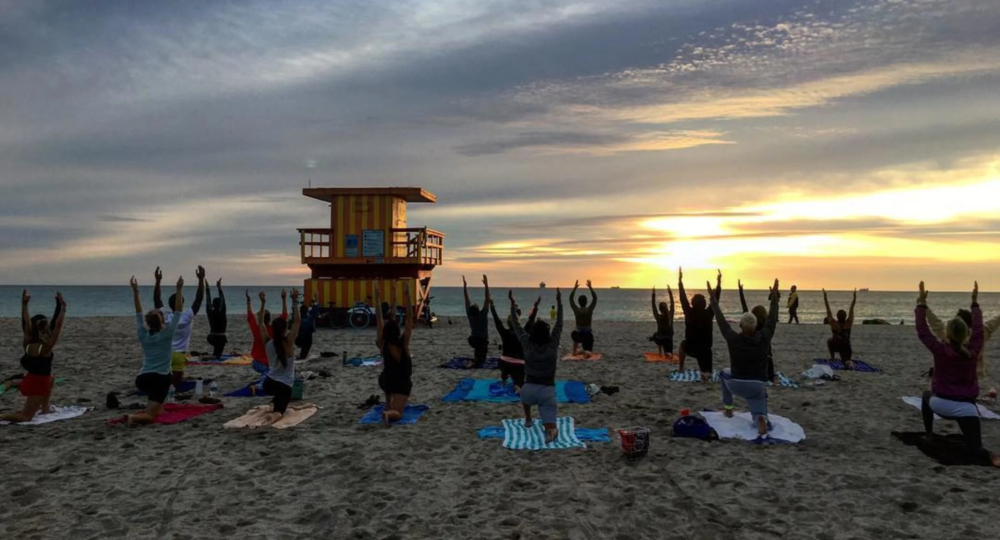

Welcome to My Yoga Journey
I first discovered yoga while living in Miami, and it quickly became something very special to me. My journey began with peaceful sunrise and sunset yoga sessions on the beach, surrounded by the sound of the ocean and the warm breeze. Those moments helped me feel more connected to myself, both mentally and physically, and inspired me to continue practicing yoga in my everyday life.

Yoga is an ancient practice that connects the mind and body through movement, breathing exercises, meditation, and relaxation techniques. It can help reduce stress, improve flexibility, and create a sense of balance and calm..
In this project, I will share different styles of yoga and simple morning routines that can help build healthy habits and positive energy for the day. Whether you are completely new to yoga or already experienced, these pages are designed to inspire and support your own yoga journey.
For more information, visit Yoga Journal to explore further resources.